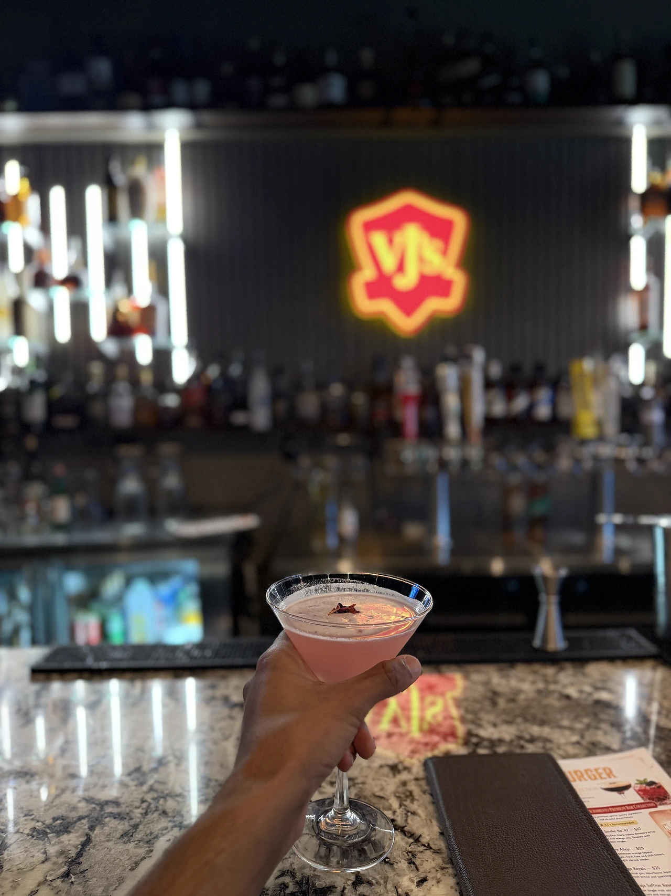
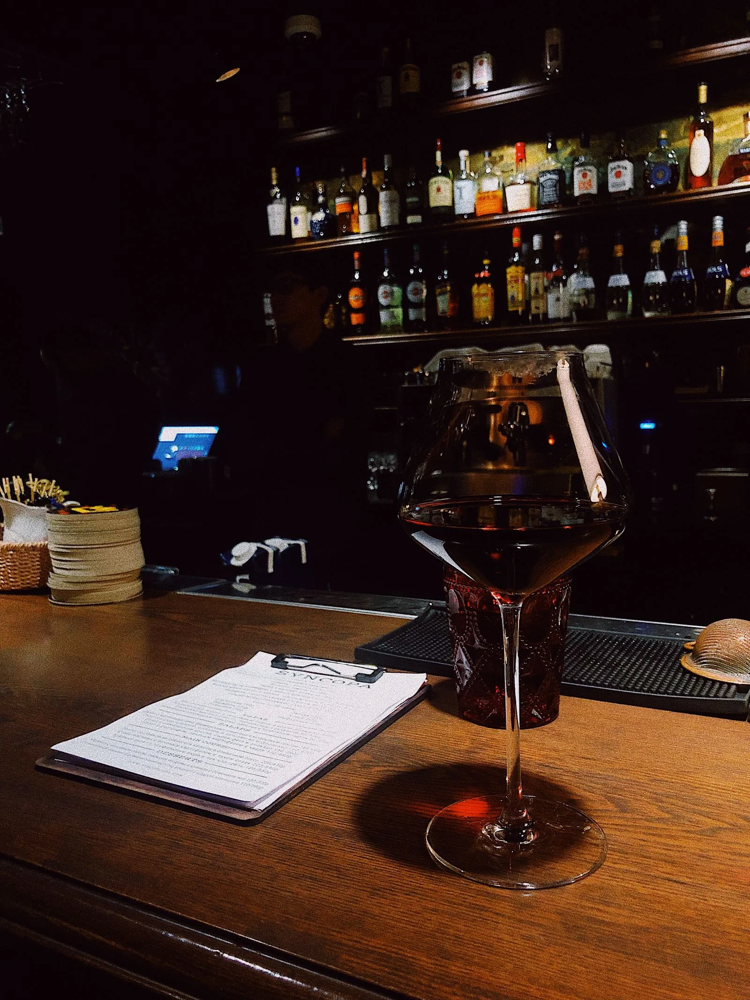
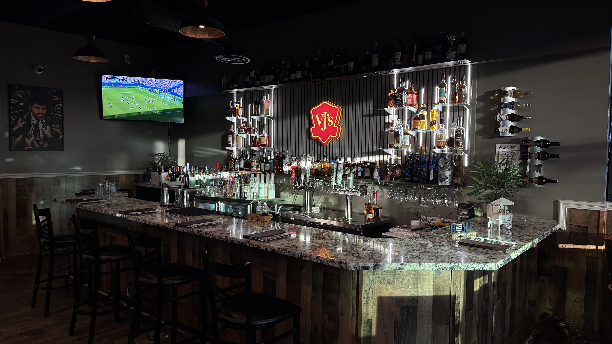

PULL UP A SEAT
MAKE YOURSELF
AN EVENING.
Meet for a cocktail, catch up over wine, or settle in with a cold beer. Ask our team for today’s selections and prices.

MIX UP YOUR EVENING
Cocktails worth
making plans for.
Bright, bold, and made for your kind of night.
Ask about cocktails
A GLASS. A GOOD CONVERSATION.
Uncork a
good evening.
Find your next glass and settle in for a little longer.
Ask about wines
COLD BEER. WARM WELCOME.
Your people.
Your next pint.
Meet at VJ’s for cold beer and a game worth watching.
Ask what’s pouring
THE COLLECTION AT VJ’SRARE WHISKEY. A REASON TO STAY.
SOME FINDS
DESERVE A
CLOSER LOOK.
Explore our rare whiskey collection, discover a new favorite, or come back for a pour you love. Let our bar team guide you through what’s on the shelf.
Talk to our bar teamAsk our team about available bottles and pours.